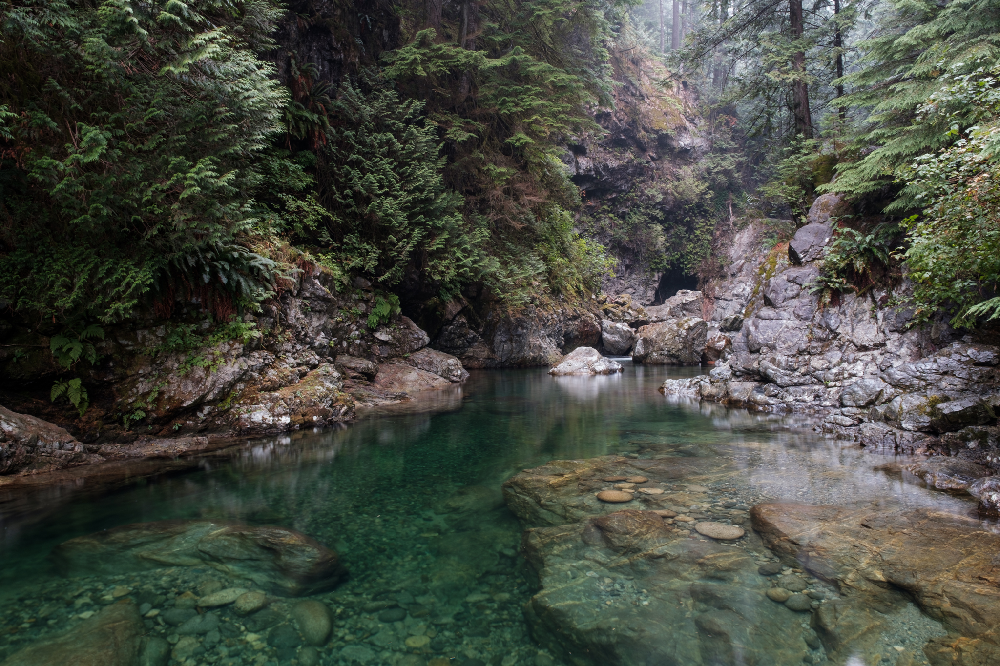
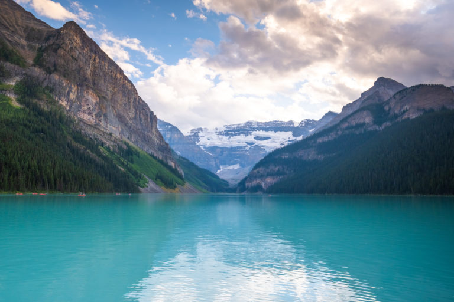

Canada, the Land of the Free
Entry #1: Capilano Suspension Bridge Park
 One place you can't miss here is the Capilano Suspension Bridge Park.
This place is close to the city of Vancouver and is one of the many
places that you should visit while you are in the British Columbia
province. It is one of the longest suspension bridges you can find in
the world. As someone who has the fear of falling, walking down the
bridge was truly a frightening experience. Although the bridge looks
very short and meager from a distance, that impression is flipped
completely upside down once you stand right in the middle of this
bridge. The strong winds carried through this valley make the bridge
sway so hard you'd feel like it could flip at any time. It doesn't
help that many people are walking down the bridge making the sway even
stronger. A once a lifetime experience.
One place you can't miss here is the Capilano Suspension Bridge Park.
This place is close to the city of Vancouver and is one of the many
places that you should visit while you are in the British Columbia
province. It is one of the longest suspension bridges you can find in
the world. As someone who has the fear of falling, walking down the
bridge was truly a frightening experience. Although the bridge looks
very short and meager from a distance, that impression is flipped
completely upside down once you stand right in the middle of this
bridge. The strong winds carried through this valley make the bridge
sway so hard you'd feel like it could flip at any time. It doesn't
help that many people are walking down the bridge making the sway even
stronger. A once a lifetime experience.
Entry #2: Lynn Canyon Park

If you are looking to trek/hike, Lynn Canyon Park would be my
suggestion. It is a very long trail that goes through a dense forest
that gives you many different views just in one journey. The trail
runs along the canyon, so you can never miss the river that flows
through the entire forest. If you want to feel connected with nature
away from bustling city life, this is the palace you want to be in.
Just be careful of the bears though.
Entry #3: Lake Lousie

Finally, near the town of Banff is the renowned Lake Lousie, with one
of the most breathtaking views in Canada. Next to the lake is the
Fairmont Chateau Lake Louise Hotel, where travelers including me can
reside to enjoy this view. Along the lake is a trail where you get to
enjoy this huge lake in all its glory. If you walk down the lakeside
trail, you will find that it continues into the forest, which in its
own right was also very beautiful. I was told that if you come during
winter, the entire lake would be frozen, and many people can ice skate
here if you do enjoy that kind of sport. A palace that you should miss
if you are in the British Columbia